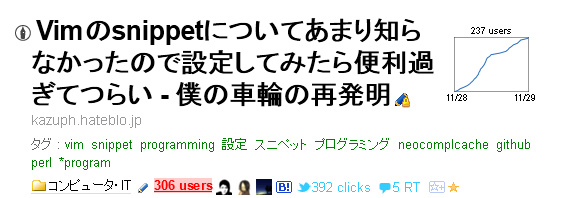
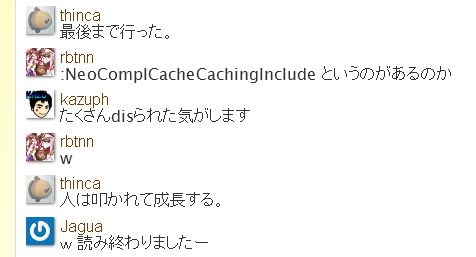
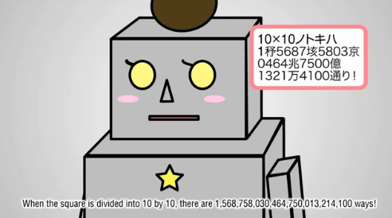
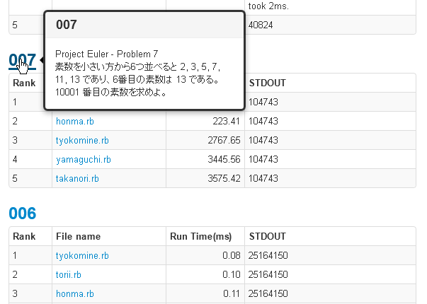

みんなでProjectEuler
in Ruby
@kazuph
2012/12/01
自己紹介

かずふ
kazuph
2年目エンジニア
Vimの記事を書いたり

vimrc読書会
に行ってdisられてきたりしている 
Vimが大好きな
スマフォエンジニアです！
続きは懇親会で！
突然ですが皆さん
ProjectEulerって
知ってますか？
しーん
ProjectEulerとは
挑戦的な数学/コンピュータのプログラミング問題集サイト。
Link : ProjectEuler
ふーん
じゃあ
この「お姉さん」は知ってますか！？

( ･`ω･´)/
つまるところ
ProjectEulerとは
↓な問題をたくさん解くサイト

こんな問題が
400問以上
お姉さんに見せたら
大変なことに！？
これ以上お姉さんに数えさせちゃいけない！！
こんなことや
こんなことになってしまう前に！

きれいなお姉さんは
救いたいですか？
みんなでProjectEuler
in Ruby
@kazuph
2012/12/01
もとい
Rubyでお姉さん
（複数人）
を救った話
@kazuph
2012/12/01
はい
と言うことで、ここからはまったく「お姉さん」とは関係なく、会社のみんなでProjectEulerを解いてみた話をします。
Eulerの始まり
とある部長がSkypeで問題１を
出題したのが発端
↓
みんなが解答をSkypeであげまくる
↓
みんなが解いたソースを自分の
リポジトリに上げ始めた
リポジトリに上げ始めた
↓
Facebookグループで「解いた！」宣言
→レビュー
→レビュー
他力本願
めんどくさいことはJenkinsさんにお願い！
翌週には完成してました(^q^)
僕らのつくったEulerSystem
- githubにpushするだけの簡単操作
- コミットすると実行(結果|時間)を更新
- 問題ごとに実行速度順にランキング
- 言語は一応Ruby縛り
こんなん

そんな感じで楽しい
「ぷろおい！」生活が
始まる
Problem 1
Problem 1
1000 未満の 3 か 5 の倍数になっている
数字の合計を求めよ.
当時のSkypeでの解答
某春◯さんの解答
#!/usr/bin/env ruby
# encoding: UTF-8
total = 0
(1..1000).each do |num|
if num % 3 == 0 || num % 5 == 0
total += num
end
end
p total
※ここからのコードは
時間がないので
雰囲気だけ味わってね☆彡
PHPerさんの解答
<?php
//3の倍数
$total = 0;
for($n = 1 ; 3 * $n < 1000 ; $n++){
$total += 3 * $n;
}
//5の倍数
for($n = 1 ; 5 * $n < 1000 ; $n++){
//3の倍数は除く
if( $n%3 != 0 )$total += 5 * $n;
}
echo $total;
Perlerさんの解答
my $res = 0;
map { $res += ( $_ % 3 && $_ % 5 ) ? 0 : $_ } 1..999;
say $res;
ワンライナー
春◯さん②
$ perl -e '$a; for(1..1000){unless($_%3&&$_%5){$a+=$_}};print "$a"'
僕
$ perl -le 'print eval(join "+",(grep{!($_%3)||!($_%5)}1..(1e3-1)))'
PHPerの方②
$sum = 0;for($i=0;$i<1000;$i++)if($i%3===0||$i%5===0) $sum+=$i;
Rubyistの人
((0...1000).step(3).to_a | (0...1000).step(5).to_a).inject(0){|s, i|s+=i}
なぜかPerl6
perl6 -e 'say [+] (1..999).grep({!($_%3)||!($_%5)})'
人によって書き方が
たくさんある！
こんな感じで社内で
盛り上がりました！
更にEuelr Systemが
できてからの投稿
ここからはスピードとの戦いです
p (1..999).select {|n| n % 3 == 0 || n % 5 == 0}.inject(&:+)
ループはeachが速い
total = 0
(1..999).each{|n| total += n if n % 3 == 0 || n % 5 == 0}
p total
CTOのズルい一投
数学的に解く
m = 1000; a1 = 3; a2 = 5
m = m - 1; a3 = a1 * a2;
b1 = (m / a1).to_i; b2 = (m / a2).to_i; b3 = (m / a3).to_i
p (b1 * (b1 + 1) * a1 + b2 * (b2 + 1) * a2 - b3 * (b3 + 1) * a3) / 2
ループしたら負け
ならば！
演算コストを極める
四則演算「+」「-」「*」「/」を減らす
p( (999.div(3) * (3 + 999) + 999.div(5) * (5 + 995) - 999.div(15) * (15 + 990)) / 2)
Win!
m = 1000; a1 = 3; a2 = 5
m = m - 1; a3 = a1 * a2; b1 = (m / a1).to_i; b2 = (m / a2).to_i; b3 = (m / a3).to_i
p (b1 * (b1 + 1) * a1 + b2 * (b2 + 1) * a2 - b3 * (b3 + 1) * a3) / 2
Time: 0.12 msec
p( (999.div(3) * (3 + 999) + 999.div(5) * (5 + 995) - 999.div(15) * (15 + 990)) / 2)
Time: 0.05 msec
Problem 7
Problem 7
10001 番目の素数を求めよ.
素数の問題
はい、そうです
require 'prime'が
ありますね
require 'prime'
素数の判定をしてくれる
require 'prime'
i = 2
j = 1
loop do
if i.prime?
j += 1
end
if j > 10001
break
end
i += 1
end
puts i
require 'mathn'
(こっちが推奨？)
require 'mathn'
i = 1
cnt = 0
while i += 1
if Prime.instance.prime?(i)
cnt += 1
if cnt == 10001
break
end
end
end
p i
これでは味気なさすぎる
6k±1フィルタ
6の倍数±1以外は素数でないので省く
#!/usr/bin/env ruby
# coding : utf-8
require 'prime'
max = 10001
primes = [2, 3, 5]
n=0
loop do
break if primes.size > 10001
n+=1
prime = 6*n+1
primes << prime if prime.prime?
prime +=4
primes << prime if prime.prime?
end
p primes[max-1]
アルゴリズムを工夫
してこそのEuler
そしてさらに高みを
求めるのもEuler
require 'prime'？
貧弱、貧弱！
アルゴリズムを極める
素数の判定を自前で実装で
max = 10001
def prime?(num, ary)
ary.each do |n|
break if n * n > num
return false if num % n == 0
end
return true
end
n = 0
prime_ary = [2, 3, 5]
while prime_ary.count < max
n += 1
prime = 6 * n + 1
prime_ary.push(prime) if prime?(prime, prime_ary)
prime += 4
prime_ary.push(prime) if prime?(prime, prime_ary)
end
p prime_ary[-1]
ベンチマーク結果
| 手法 | 実行時間 |
|---|---|
| prime | 3575.42 msec |
| mathn | 3445.56 msec |
| 6k±1 | 2767.65 msec |
| 自前で全部実装 | 223.41 msec |
なんと10倍速い！
アルゴリズムの神秘
オイラーには素数を
計算する問題が多い
つまりは、
素数を制する者が
オイラーを制す！！
そんなこんなで
社内で熱いバトルを
繰り広げています^^
そして
社内の火種は
日本中に飛び火
素数戦争勃発！
YAPC × CodeIQ ×ガイアックス
オンラインで素数問題の解答を投稿
ﾄﾞﾔｧ!m9( ･`ω･´)
まとめ
やって良かったこと
- パフォーマンスを意識してプログラミングをできるようになった
- 全員がRubyでやったので言葉が通じるようになった
- みんなで「同じ問題」を解いているので、レビューがとてもやり易い
- 人や自分の癖がわかるようになった
今後の課題
- 全くオブジェクト指向が身についてない
- Rubyのワンライナーがキメると気持ちよすぎて逆にキモい（明らかに自分のせい
- TDD導入など